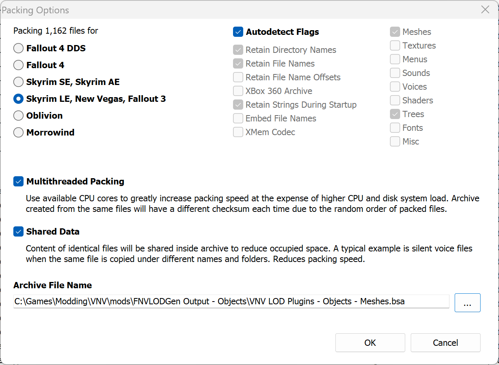

Overview
Understanding LOD
LOD stands for Level Of Detail - a system used to represent distant objects with simplified meshes and textures to improve performance. In Bethesda games, LOD primarily refers to Cell LOD, which represents whole "chunks" of land in the distance.Cell LOD is divided into three main categories:
- Object LOD - Simplified versions of buildings, rocks, and other static objects. Has only one quality level and generates relatively quickly.
- Terrain LOD - Represents the terrain of cell groups, with multiple quality levels that change based on distance (LOD4 4x4, LOD8 8x8, etc.). Takes the longest to generate due to its complexity.
- Tree LOD - 2D planes representing vegetation. Despite the name, works best for small flora rather than actual trees, which are often handled by Object LOD.
Why Generate Custom LOD?
The vanilla game's LOD is pre-generated and static, which means it can't reflect changes made by mods to terrain or objects. Custom LOD generation creates meshes that match your modded game, providing:- Increased visual consistency between nearby and distant objects.
- More objects visible in the distance.
- LOD textures that match your installed texture mods.
- Improved quality over the low-detail vanilla LOD.
- Filled gaps where objects previously appeared out of nowhere during cell transitions.
Viva New Vegas (even with VNV Extended) does not strictly require terrain LOD regeneration, but this guide covers both object and terrain LOD to accommodate custom modlists.
Extra instructions for Tale of Two Wastelands users are included throughout.
While custom LOD significantly improves visual quality, it does come with a minor performance cost. The trade-off is generally worth it for most modern systems.
LOD Comparison
Drag the slider handle to compare how the game looks with generated LOD. Use the dropdown to select different comparison sets.

Preparation
Creating a Separator in MO2
- Right-click the empty space in the left pane of MO2 and select Create separator.
- Name the separator LOD.
INI Tweaks
These settings will increase the LOD draw distance and remove the jarring transitions of SpeedTree flora.- Click the
 button at the top of MO2 and select INI Editor.
button at the top of MO2 and select INI Editor. - Select the FalloutCustom.ini tab, which should have the settings copied from the Mod Organizer 2 page.
- Paste in the following at the end of the file:
IMPORTANT:
Increasing LOD distances means that the object LOD will now reach the impostor meshes in Vegas, making them clip into each other!
The guide includes Goodies which contains a scripted solution.
If you want a standalone fix, use Impostors and LOD Flicker Fix.
Resolving Conflicts
This section is not applicable to Tale of Two Wastelands users!
To resolve this, do following:
- Double-click on Yukichigai Unofficial Patch in the left pane of Mod Organizer 2.
- Go to the Filetree tab.
-
Hide following folders:
- meshes\landscape\lod
- textures\landscape\lod
The mod name can slightly differ depending on how you installed it or which name you chose during installation.
Installing LOD Resources
Install in the following order:-
LOD Fixes and Improvements - NVSE
- Main Files - LOD Fixes and Improvements - NVSE
If you followed Viva New Vegas, you should have this mod already installed.
-
FNVLODGen Resources
- Main Files - FNVLODGen Resources
- Hide FNVLODGen.esp.
- Open the mod in Mod Organizer 2 by double-clicking it on the left pane.
- Go to the Filetree tab.
- Right-click the file or folder you want to hide and click Hide.
How to hide files and folders:
-
Much Needed LOD
- Main Files - Much Needed LOD
-
Hide the following:
- MuchNeededLOD.esp
- The effects folder inside meshes
-
Much Needed LOD fixed rocks color
- Main Files - Much Needed LOD fixed rocks color
-
LOD Additions and Improvements
- Main Files - LODadditions
- Hide tmzLODadditions.esp.
-
FNV LOD Supplementation
- Main Files - FNV LOD Supplementation
- Optional Files - Optional Overpasses
-
TCM's LOD Overhaul
- Main Files - TCM's LOD Overhaul
-
More LODs Additions and fixes
- Main Files - More LODs Additions and fixes
-
Wasted LOD - Cliffs of Mojave
- Main Files - Version 1.0
- Hide Wasted Mojave Rock LOD.esp.
-
Different LOD mods little tweaks and additions
- Main Files - Different LOD mods little tweaks and additions
-
LODIFY - Level of detail improvement for your Fallout
- Main Files - LODIFY
- Optional Files - LODIFY FNV Wall_SoGB Editon
- Hide TTWLods.esp and LODIFY_FNV.esp from both files.
-
Decent LOD Kit
- Main Files - Decent LOD Kit
- Hide Decent LOD Kit.esp.
-
Nuclear LOD
- Main Files - Nuclear Core
- Main Files - Nuclear Trees - Vanilla
- Hide Nuclear_LOD.esp and TreeLOD_Vanilla.esp from both files.
-
TTW Fallout 3 LOD
-
Main Files - TTW Fallout 3 LOD 1.4
Despite the name, the mod contains LOD for objects occuring in Fallout: New Vegas as well.
If you are NOT using Tale of Two Wastelands, hide TTW Fallout 3 LOD.esp.
-
Main Files - TTW Fallout 3 LOD 1.4
-
VNV LOD Guide Plugins Merge
- Main Files - VNV LOD Guide Plugins Merge
-
High Priority LOD
-
Main Files - High Priority Core - with NVMIM
If you are a Tale of Two Wastelands user, and/or don't use New Vegas Mesh Improvement Mod, choose High Priority Core - without NVMIM
- Main Files - High Priority Trees - Vanilla
-
Main Files - High Priority Core - with NVMIM
If you are using Tale of Two Wastelands, also do the following:
- Disable or uninstall FNVLODGen Resources.
- Install the following files:
Load Order
After installing all mods, make sure the end of your load order looks like this:- LOD additions and improvements - TTW Patch.esp (Tale of Two Wastelands Exclusive)
- Wasted LOD rocks.esp (Tale of Two Wastelands Exclusive)
- VNV LOD Guide Plugins Merge.esp
- HighPriorityLOD.esp
- TreeLOD_Vanilla.esp
Pre-Generated LOD
If you use a VNVE modlist with no changes to textures or the game world, you can skip manual LOD generation by using these files. The Object LOD file also includes Tree LOD, while the other only contains Terrain LOD to reduce bandwith required for upload and download.Simply install both the Object and Terrain Pre-Generated LOD as normal mods in MO2 and put it under the resources listed in the previous section (which you still need).
After doing so, disable following mods in the left pane:
- High Priority Core
- High Priority Trees - Vanilla
Generating LOD
xLODGen
xLODGen is an xEdit-based tool that allows you to generate LOD meshes for your game. Similarly to xEdit, it has a single executable that can be be turned into a game specific version by adding arguments.
WARNING!
Do not use the FNVLODGen from Nexus! It's heavily out of date and will cause issues with your game - most notably broken Tree LOD!
You need at least version 130 of xLODGen to expect a functional LOD output.
- Download the latest xLODGen from here.
- Once the download has finished, extract the contents of the archive anywhere outside of the default Windows folders.
- In MO2, select the
 button at the top of MO2 to open the executables menu.
button at the top of MO2 to open the executables menu. - Click the + at the top of the window and the select Add from file...
- From the pop-up, navigate to where xLODGen is installed and select xLODGenx64.exe.
- In the Arguments box in the right pane, enter -FNV -O:"C:\Output"
This argument will send the LOD output to a folder called Output on your C drive (the drive Windows is installed on).
You can change the path if you would prefer the files to be generated elsewhere (do not use a UAC protected folder or the game folder).
Make sure that the output folder is empty before generating LOD.
Object LOD
In this step we will generate Object and Tree LOD. This is the fastest and easiest setup, and also the most commonly used one.
Things to know:
- You will need to re-generate Object LOD every time you install a new mod that adds or modifies objects in the game world, or if you change the texture of an object.
- Select xLODGen from the executables drop-down in the top right of MO2 and click Run.
- Right-click on the worldspaces list and pick Select All.
- Copy all settings from the image below:
- Click Generate.
- When complete, the log will stop and at the end you will see a message saying "LOD generation done", you can now close xLODGen.

Ignore locked settings like "in UV range" - they can't be edited since they are not applicable to Fallout: New Vegas.
Settings Explanation
- In MO2, right-click on the Overwrite folder at the bottom of the left pane and select All Mods -> Create empty mod above.
- Title the mod FNVLODGen Output - Objects.
- Navigate to where the LOD files were generated and select both the textures and meshes folders.
- Cut them to the FNVLODGen Output - Objects mod you just created (right-click on the mod and select Open in Explorer).
- Enable the mod by ticking its checkbox.
- High Priority Core
- High Priority Trees - Vanilla
IMPORTANT:
After every LOD generation, disable following mods in the left pane:
These plugins don't serve any purpose for the game itself, but they are required for LOD generation to work properly.
Terrain LOD
In this step we will generate Terrain LOD. This can be the slowest and most CPU intensive step, but it can add a lot of detail to the terrain in the distance.If you are in a rush or have a slow CPU, it's you can uncheck Build diffuse and Build normal options - this will skip texture generation, massively speeding up the process.
Things to know:
-
Terrain LOD is used when generating Object LOD to remove triangles that are underground - that's why you need to generate it first.
Not following this order can result in Object LOD missing triangles due to mismatched source data.
When generating both LOD types at once, LODGen will first generate the Terrain LOD, so there's nothing to worry about. - You will need to re-generate Terrain LOD every time you install a new mod that adds or modifies terrain, or if you change terrain textures.
- If you already generated LOD once and only changed textures since then, you can uncheck the Build meshes option, and only generate textures by checking Build diffuse and Build normal.
- Select xLODGen from the executables drop-down in the top right of MO2 and click Run.
- Right-click on the worldspaces list and pick Select All.
- In the right pane, uncheck Objects LOD and Trees LOD.
- In the right pane, check Terrain LOD.
-
Landscape LOD has 4 quality levels for different distances (with LOD4 being the closest to you, and LOD32 being the farthest).
Copy the settings for each LOD level from images below:
All LOD levels are generated at once! You don't have to do anything besides configuring every level!
This is not something that you pick and choose - those are not quality "settings", just how the game works.- LOD 4:
- LOD 8:
- LOD 16:
- LOD 32:


Settings Explanation

- Click Generate.
- When complete, the log will stop and at the end you will see a message saying "LOD generation done", you can now close xLODGen.
- In MO2, right-click on the Overwrite folder at the bottom of the left pane and select All Mods -> Create empty mod above.
- Title the mod FNVLODGen Output - Terrain.
- Navigate to where the LOD files were generated and select both the textures and meshes folders.
- Cut them to the FNVLODGen Output - Terrain mod you just created (right-click on the mod and select Open in Explorer).
- Enable the mod by ticking its checkbox.
IMPORTANT:
Do not disable the LOD resources you installed previously, the game needs them for the LOD to work properly.
Generated LOD must always be loaded last in your modlist!
If it happens to be overwritten by any mod (commonly texture mods such as NMC's Texture Pack), the LOD in-game will be broken.
Packing LOD
This step is not necessary, but will reduce loading time of LOD assets by the game by packing them into optimized archive files (BSAs). This translates to less stuttering when entering new areas.- Download BSArch Pro
- Once the download has finished, extract the contents of the archive.
- Run BSArchPro.exe.
- In Mod Organizer 2, right click on your FNVLODGen Output - Objects and select Open in Explorer.
- From from newly opened window, drag meshes folder into BSArch Pro.
-
You should see a window like this:
- Click the Pack button.
- A new window will open, click on ..., go to the FNVLODGen Output - Objects folder.
-
After entering the folder in the previous step, paste VNV LOD Guide Plugins Merge.esp - Object Meshes.bsa into the File name field. Press Save.
If you did everything correctly, you should see a window like this:
 - Click OK.
-
Once packaging is done, you should see a window similar to this:
Click Create .override for New Vegas and press OK. - Back in BSArch Pro's main window, click Clear List.
- Repeat the steps from 4 to 10, but this time with textures. Remember to name the BSA appropriately.
- In the FNVLODGen Output - Objects folder, delete the textures and meshes folders.
- If you generated Terrain LOD, repeat the steps from 4 to 14, replacing the word Object with Terrain.
IMPORTANT:
To properly use BSA files, you must keep the following in mind:
-
BSA files are loaded by plugins they share their name with - hence why BSAs created here start with "VNV LOD Guide Plugins Merge".
This also means that BSAs are loaded in the same order as their plugins. - BSAs belonging to the same plugin are loaded in an alphanumeric order, same one you will get when sorting by Name in File Explorer.
-
By default, an archive can't replace files added by other BSAs before it.
JIP LN adds the override functionality that changes this behavior - that's why ".override" files are needed. -
Due to Archive Invalidation, loose files will always override files in BSAs.
Because of this, you must pay attention to files added by other mods. Watch out for following folders:- meshes\landscape\lod
- textures\landscape\lod
You can enable Enable archives parsing in Mod Organizer 2 -> Settings -> Workarounds to see which mods are overwriting your BSAs.